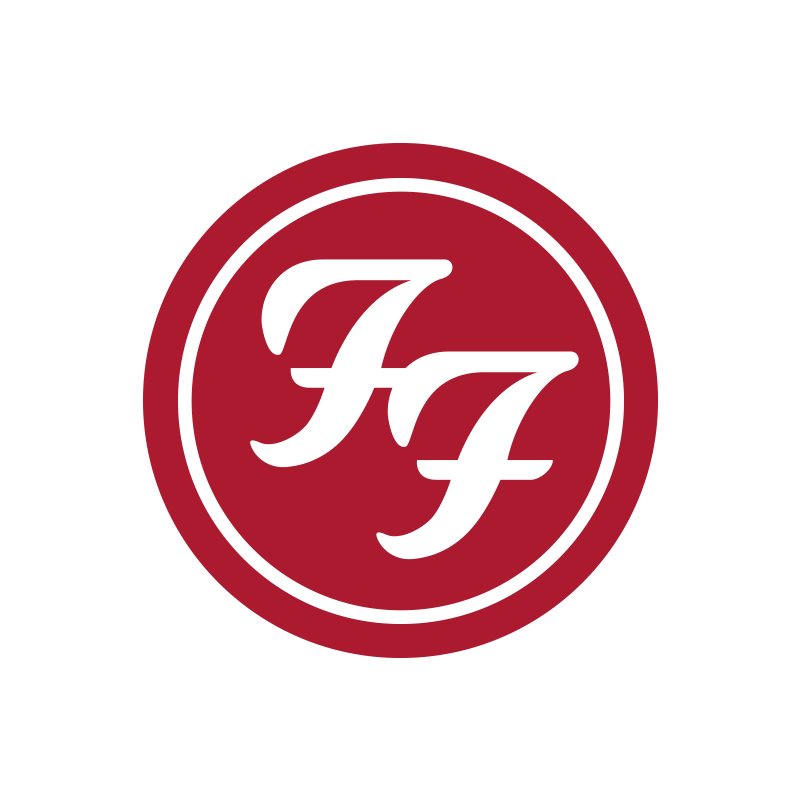

Foo Fighters es una banda estadounidense de rock alternativo formada en la ciudad de Seattle en 1994 por Dave Grohl, exbaterista de Nirvana y Scream. El grupo debe su nombre a los ovnis y los diversos fenómenos aéreos que fueron reportados por los pilotos de los aviones aliados en la Segunda Guerra Mundial, que se conocen colectivamente como Foo Fighters. Antes del lanzamiento de su álbum debut en 1995, Grohl, como único miembro oficial, reclutó al bajista Nate Mendel y el baterista William Goldsmith, ambos anteriormente miembros de Sunny Day Real Estate, así como su compañero en las giras de Nirvana, Pat Smear como guitarrista para completar la alineación.
Hablar de Dave Grohl es viajar a sus inicios en una de las bandas más famosas de finales de los 80 e inicios de los 90: Nirvana. Fan o no, todos hemos escuchado alguna canción de esta banda estadounidense, quienes confesaron que nunca se imaginaron vender millones de copias y que sus vidas cambiarían. Quizá no sea necesario recordarlo, pero Dave, el vocalista y fundador de Foo Fighters, fue el baterista de Nirvana, aunque ya había tocado antes con Scream; sin embargo, no al nivel de éxito que tuvo con Nirvana. Después de la dolorosa separación de la banda por el repentino fallecimiento del líder, Kurt Cobain, los integrantes tomaron caminos diferentes.